0:基本
このWebサイトはGUIをデザインするときの考え方を読んだ人を対象に、実際にGUIのデザインをする時にどういう風にデザインをしていけばいいのか、その例をたくさん挙げるWebサイトです。
構成は、CSSで再現するときの難易度、サンプル画像、デザインに対する評価で構成されています。これらの情報を元に、実際にWebサイトを作る時の参考になればいいなと思います。
今回はボタンを例に見て行きましょう。
1:線と面
線だけで構成されたボタン
CSSでの再現：☆☆★（簡単）
どんなデザインに向いているか
フラットデザインによくみられるボタン。線だけで構成されたボタンは写真の上にそのまま置くととても見づらいので、写真の位置を変えるか写真に半透明のマスクを掛けると良いだろう。
このボタンを扱う時の注意点
このボタンはボタンであることをユーザーが認識しづらい。そのため、ボタンにオンマウスした時にアニメーションを付けるなど、工夫が必要となる。
面だけで構成されたボタン
CSSでの再現：☆★★（透過するのは少し難しい）

- 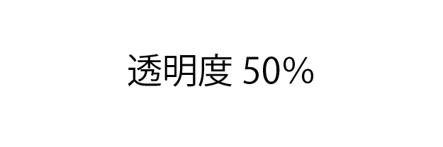
どんなデザインに向いているか
フラットデザインによくみられるボタン。線だけで構成されたボタンよりもボタンの文字が認識しやすい。色味によっては少し重くなるが、透明度を上手く調節すればスタイリッシュなボタンになる。
このボタンを扱う時の注意点
このボタンはボタンであることをユーザーが認識しづらい。そのため、ボタンにオンマウスした時にアニメーションを付けるなど、工夫が必要となる。
発展：形を変える
CSSでの再現：★★★（難しい。場合によってはCSSではなく画像で作る）
- 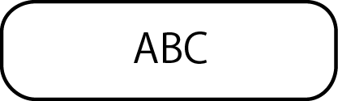
- 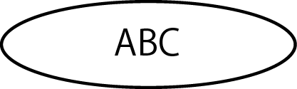
- 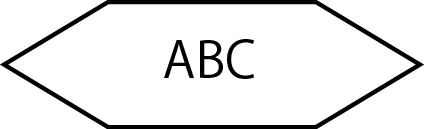
どんなデザインに向いているか
ユーザーがボタンとして一気に認識しやすくなる。企業のWebサイトなど、様々な人が見るWebサイトデザインにおすすめ。
このボタンを扱う時の注意点
このボタンはデザイン的に古臭く見える場合がある。他の部分のデザインと照らし合わせて、ほどほどに形を変える。
2:色
線と色の組み合わせ
CSSでの再現：☆☆★（簡単）
- 
- 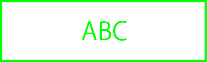
- 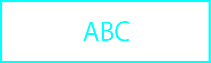
- 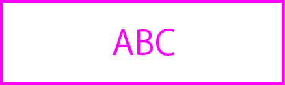
どんなデザインに向いているか
白のみや黒のみの線と比べると華やかさがある。
このボタンを扱う時の注意点
背景を黒くしたり画像を置いたりすると見づらいボタンの色もあるので、組み合わせに要注意。
面と色の組み合わせ
CSSでの再現：☆☆★（簡単）
- 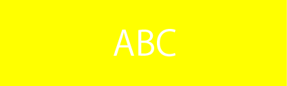
- 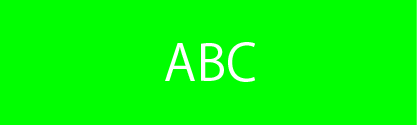
- 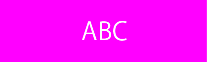
- 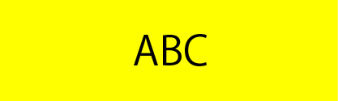
- 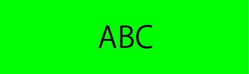
- 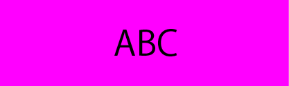
どんなデザインに向いているか
白のみや黒のみの面と比べると華やかさがある。また線だけのボタンよりボタンが見やすい。
このボタンを扱う時の注意点
このボタンは色の組み合わせをきちんと考えないと大変うるさいデザインになる。この例では原色を使用しているが、実際のデザインでは他のデザインと調和するようにボタンの色の彩度を下げる必要がある。
3:質感
滑らかなグラデーション
CSSでの再現：★★★（コードが細かくなる）
どんなデザインに向いているか
質感が乗ることでボタンらしさがより強調されている。多くのWebサイトでボタンのデザインに取り入れられる。
このボタンを扱う時の注意点
グラデーションを行う際の光源の位置に注意。WebサイトのGUIにおける光源の位置は真上が望ましい。
分割されたグラデーション
CSSでの再現：☆★★（少し込み入ったコードになる）
どんなデザインに向いているか
滑らかなグラデーションよりもスタイリッシュな印象になる。よりデザイン的・先進的なWebデザインにおすすめ。
このボタンを扱う時の注意点
分割する色とボタンの文字の色との組み合わせ次第では文字の可読性が著しく悪くなる可能性がある。
光沢を乗せる
CSSでの再現：×（画像を使う）
どんなデザインに向いているか
2000年代以前によく使われていたボタンのデザイン。高齢者など、Webサイトにあまりなじみが無い人が使う時のデザインにおすすめ。
このボタンを扱う時の注意点
CSSで再現するのが極めて困難なボタンなので、制作時のサイズなどに気を付けること。
4:影
ぼかされた影
CSSでの再現：☆★★（普通）
どんなデザインに向いているか
影を付けるとフラットなボタンにも立体感が付く。マテリアルデザインで推奨されているデザイン。
このボタンを扱う時の注意点
光沢と同じように、光源は真上に設置されるのが望ましい。また、ぼかしの程度は他のデザインときちんと合わせないとボタンだけが浮きすぎていたり目立たなくなったりするので要注意。
ぼかしていない影
- 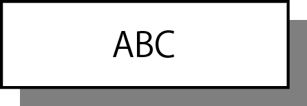
どんなデザインに向いているか
装飾的に影を付けたデザイン。ぼかされた影よりもスタイリッシュな印象になる。
このボタンを扱う時の注意点
このボタンのみ光源を真上に置いていないので、他のデザインの光源のすり合わせに注意。